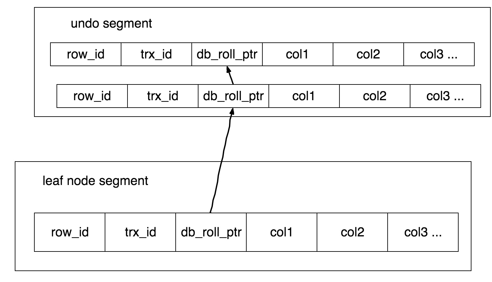

Mysql MVCC
MVCC是Multi Version Concurrency Control的简称，代表多版本并发控制。实现读不阻塞写，写不阻塞读
1 | 数据库事务的ACID特性:Atomicity(原子性), Consistency(一致性), Isolation(隔离性), Durability(持久性) |
1 |
|

InnoDB表会有三个隐藏字段
- 6字节的DB_ROW_ID
- 6字节的DB_TX_ID
- 7字节的DB_ROLL_PTR
在每个事务开始的时候，会将当前系统中的所有的活跃事务拷贝到一个列表中 (read view)，根据read view最早一个事务ID和最晚的一个事务ID来做比较的，这样就能确保在当前事务之前没有提交的所有事务的变更以及后续新启动的事务的变更，在当前事务中都是看不到的。